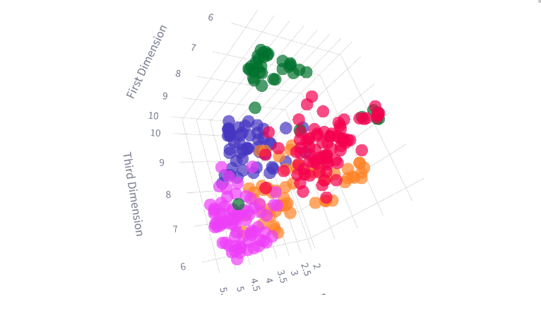
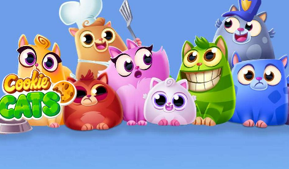
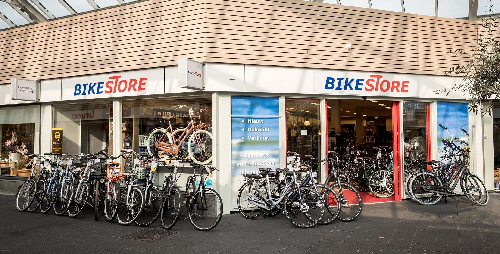

Portfolio
This portfolio showcases my Data Science and Data Analysis projects from academic, self-learning, and hobby pursuits, along with my achievements and skills.
Achievements
- Champion of ATTACKER 2024 - Trading Algorithm Building Competition.
- Top 2 of The Data Analytics Competition 2024.
- Top 10 The HUB Innovation and Creativity Competition.
- Scientific Research on the topic "User Clustering on Social Networking Platforms and Applications in Business".
Projects

Analyze social media user behavior to identify clusters and propose targeted strategies, improving engagement and optimizing business outcomes. Web App
Tools Used: Python (Pandas, Numpy, Scikit-learn, Plotly), Streamlit, HuggingFace.
Tools Used: Python (Pandas, Numpy, Scikit-learn, Plotly), Streamlit, HuggingFace.

Using A/B testing, the analysis of the mobile puzzle game Cookie Cats shows that keeping the first gate at level 30 improves 7-day retention compared to moving it to level 40.
Tools Used: Python (Pandas, Matplotlib)
Tools Used: Python (Pandas, Matplotlib)
The main purpose of the Django application is to assess the suitability between resumes and job descriptions.
Web App
Tools Used: Python, Django, Langchain, Javascript, Bootstrap, Render
Web App
Tools Used: Python, Django, Langchain, Javascript, Bootstrap, Render
This project develops a chatbot that interprets natural language queries, generates SQL queries, and fetches results from a SQL database in an intuitive, user-friendly way. It leverages the Gemini-Pro model and integrates with the Streamlit GUI for an enhanced interactive experience. Chatbot
Tools Used: MySQL, LangChain, Streamlit, Railway
Tools Used: MySQL, LangChain, Streamlit, Railway
The project aims to predict the stock prices in Vietnam using the Prophet algorithm with data from the 'Vnstock' library and deploying it on Streamlit. Web App
Tools Used: Excel, Python (Pandas, Plotly, Vnstock, Streamlit), Prophet
Tools Used: Excel, Python (Pandas, Plotly, Vnstock, Streamlit), Prophet
Data Analysis (Netflix Userbase Dataset)
The project aims to gather insights into user behavior and preferences, informing strategies for an improved Netflix experience, including content recommendation and pricing optimization.
Tools Used: Python (Pandas, Plotly, Matplotlib, Seaborn), Jupyter Notebook.
Tools Used: Python (Pandas, Plotly, Matplotlib, Seaborn), Jupyter Notebook.
Data Visualization (Bike Stores Dataset)

The Bike Stores project analyzes revenue growth trends over the years. Using Microsoft SQL Server for data queries and exports, Tableau is employed to create charts, offering insights into top customers and revenue per salesperson.
Dashboard
Tools Used: Microsoft SQL Server, Excel, Tableau.
Tools Used: Microsoft SQL Server, Excel, Tableau.
Data Cleaning (FIFA21 Dataset)
In this project, I will focus on cleaning and preparing messy FIFA 21 data for analysis. The data often contains inconsistencies, missing values, and various formatting issues. By addressing these problems, the data will be ready for accurate and meaningful analysis.
Tools Used: Python (Pandas, Numpy), Jupyter Notebook.
Tools Used: Python (Pandas, Numpy), Jupyter Notebook.
Micro Projects
Statistics and Machine Learning
- Genetic Algorithm : In this file, I have implemented simple genetic algorithm that finds out the list of numbers which equal to any specified number when summed together.
- Linear Regression : In this file, I aim to solve linear regression using analytical method and also by implementing gradient descent.
University Course
- Data Mining : This repository contains code for a large exercise exploring Streamlit in data mining.
- Artificial Intelligence : This repository contains code for a large exercise that learns how to effectively implement PL-Resolution, DPLL, and WalkSAT in a specific programming language.
Competitions
- The Data Analytics 2024: This repository contains code for a data analytics competition on the topic of building machine learning models to predict users' bank credit. Deploy
- Trading Algorithm - ATTACKER 2024: This repository contains the code for the trading algorithm building competition that my teammates and I did together. Deploy
- The HUB Innovation and Creativity: This repository contains the code for a startup idea contest (stock prediction) that my teammates and I did together. Deploy
Core Competencies
- Languages: Python, SQL, R
- Methodologies: Data Analysis, Machine Learning, Time Series, NLP, Statistics, Data Structures & Algorithms
- Tools: BigQuery, MySQL, Microsoft SQL Server, Git, MS Excel, Tableau, LangChain
- Other Tools: Adobe Photoshop, Adobe Premiere Pro